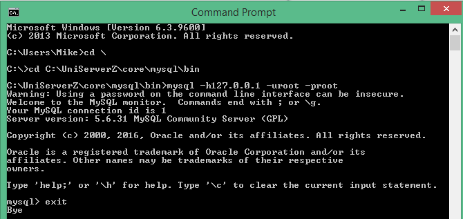
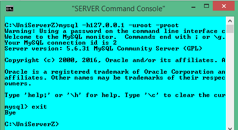

|
|
Server Command Console |
The Server Command Console opens a command window with environment variables preset and paths configured for Uniform Server utilities. Apart from cosmetics, it is identical to a standard command window.
This page focuses on using the Server Command Console. It is not intended as a definitive guide but just an introduction to show you how to access and run server utilities such as the MySQL client. Note: To run a MySQL client the preferred method is to use the dedicated MySQL console.
Command window - background
Uniform Server Zero XIII is a portable WAMP stack; each component provides a number of command line utilities. These command line utilities can be run using a standard command window (cmd). The process is tedious as the following example demonstrates, you need to change the working directory to the folder containing the utility to be run and set any environment variables as required.
How to run a standard command window
This example uses the MySQL client to demonstrate how to run command line utilities using the standard command window. MySQL client allows you to run SQL commands, for example to create or delete databases.
To open a standard command window you run the cmd command from the start menu describe below. From the command window you navigate to the folder containing the MySQL utility programs, from this folder you run the MySQL console utility.
Note 1: The path where you installed The Uniform Server Zero XIII may be different; substitute your path as appropriate.
Note 2: To run MySQL utilities you must have the MySQL server running.
The dialogue in the command window looks similar to that on the right. |
 |
Running a command window from the host PC steps 1 to 2 become tedious especially when running servers from a USB stick or moving servers to a different location. The paths will be different. The Server Command Console removes these four steps see below.
Server Command Console
The Server Command Console opens a command window, with environment variables preset and paths configured for server utilities removing the above three teps.
To run a server command-line utility all that is required is to enter the command name and any parameters. For the above example proceed as follows:
The Server Command Console with its pre-defined paths makes running utilities easier than using the standard command prompt. |
 |
MySQL Prompt - Short cut
The MySQL utility is a very popular admin tool; Uniform Server Zero provides a dedicated menu button (MySQL Console) that directly runs this utility in a console window.
Note: The MySQL Console button is enabled only when the MySQL server is running. |

|
Note:
The MySQL console runs a Server console and the following command line: mysql.exe --host=localhost --port=3306 --user=root --password=root
Parameters used are automatically extracted from current MySQL server configuration.
The above command line shows default MySQL server configuration parameters.
Command window and MySQL
Using a standard command window (command prompt) to administer the MySQL server is not specific to The Uniform Server Zero XIII, it is applicable to any Windows MySQL installation. However using it is inconvenient hence Uniform Server provides provides "Server console" and "MySQL console" that enhances the command window.
The Uniform Server Zero’s Server Console sets the paths to MySQL binaries transparently. With the command console you can access the MySQL server utilities:
- mysql.exe - MySQL client runs SQL commands
- mysqladmin.exe - MySQL admin
- mysqldump.exe - Database dump
The Uniform Server Zero’s MySQL Console provides a single button click that takes you directly to a MySQL client so there is no need to use the Server Console. The MySQL client allows you to run SQL commands, for example to create or delete databases.
Server Utilities - View help information
Each server utility contains a help facility showing parameters that can be used. The following list utilities available:
| Utility | Help | Comment | |
| ab.exe | -h | - Benchmarking tool | |
| abs.exe | -h | - Benchmarking tool SSL | |
| msmtp.exe | --help | - Mail utility | |
| mysql.exe | --help | - MySQL client runs SQL commands | |
| mysqladmin.exe | --help | - MySQL admin | |
| mysqldump.exe | --help | - Database dump | |
| openssl.exe | ? | - Open SSL utility | |
| php.exe | -h | - PHP command line | |
| perl.exe | -h | - Perl command line |
| Note 1: To display help information enter utility name followed by the help parameter for example. | mysqladmin.exe --help |
| Note 2: If output scrolls off the screen add pipe "| more" this lets you page through the output by hitting the space bar for example. |
mysqladmin.exe --help | more |
Benchmarking tool
Apache Bench (ab) is a simple http load generating tool.
Suppose we want to see how fast localhost can handle 100 requests, with a maximum of 10 requests running concurrently enter the following into Server Command Console:
ab.exe -n 100 -c 10 http://127.0.0.1/
You can target a specific page using the following format and write the output to a file:
ab.exe -n 100 -c 10 http://127.0.0.1/test.php > test1.txt
Same as above with keep-alive on
ab.exe -n 100 -c 10 -k http://127.0.0.1/test.php > test1.txt
You can force the request to use mod_deflate if avaible using the following format:
ab.exe -n 100 -c 10 -H "Accept-Encoding: gzip;" http://127.0.0.1/test.php > test1.txt
Note: Running tests from localhost skews the results you should always run your benchmarks from another machine.
That said you might be interested only in comparative results, for example optimising a particular piece of code for speed. Running locally will quickly highlight any bottlenecks.
Related topics
Set New MySQL root user password using MySQL Prompt
Restore MySQL root user password using command window
Create Delete Database using Server Command Console
Create Restricted MySQL User using MySQL Prompt
Delete Restricted MySQL User using MySQL Prompt
Edit Restricted MySQL User using MySQL Prompt